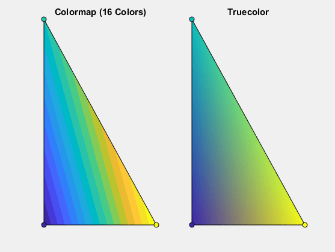

Differences Between Colormaps and Truecolor
Many graphics objects, such as surfaces, patches, and images, support two different techniques for specifying color: colormaps (which use indexed color) and truecolor. Each technique involves a different workflow and has a different impact on your visual presentation.
Differences in Workflow
A colormap is an m-by-3 array in which each row specifies an RGB triplet. To use a colormap in a graphical presentation, you assign an index to each location in your graphic. Each index addresses a row in the colormap to display a color at the specified location in the graphic. By contrast, using truecolor involves specifying an RGB triplet at every location in your graphic.
Here are some points to consider when deciding which to technique to use:
Truecolor is more direct. If you want to assign specific red, green, and blue values to specific locations in your graphic, it is usually easier to do it using truecolor.
Making changes in a region of the color palette is easier to do in a colormap. For example, if you want to brighten the transition from blue to green in a gradient, it is easier to edit those rows in the colormap than it is to edit the colors at the individual locations in your graphic.
The format of your data might be more appropriate for one of the workflows. For example, many compressed GIF images are stored using indexed color.
Both coloring techniques use a color array C to
specify the color information. The shape of C depends
on the type of graphics object and the coloring method you choose.
This table summarizes the differences.
| Type of Graphics Object | Property that Contains Color Array C | Shape of C for Indexed Color | Shape of C for Truecolor |
|---|---|---|---|
Surface | CData | C is an m-by-n array that is the same size
as the z-coordinate array. The value at C(i,j) specifies
the colormap index for Z(i,j). | C is an m-by-n-by-3 array, where C(:,:,i) the
same size as the z-coordinate array.C(i,j,1) specifies
the red component for Z(i,j).C(i,j,2) specifies the green component
for Z(i,j).C(i,j,3) specifies
the blue component for Z(i,j). |
Image | CData | C is an m-by-n array for an m-by-n image.
The value at C(i,j) specifies the colormap index
for pixel (i,j). | C is an m-by-n-by-3 array for an m-by-n
image.C(i,j,1) specifies
the red component for pixel (i,j).C(i,j,2) specifies the green component
for pixel (i,j).C(i,j,3) specifies
the blue component for pixel (i,j). |
Patch (x, y, z) | CData | To color patch faces, C is a 1-by-m array
for m patch faces. C(i) specifies the colormap
index for face i.To color patch vertices, C is an m-by-n array, where
m is the number of vertices per face, and n is the number of faces. C(i,j) specifies
the colormap index for vertex i of face j. | To color patch faces, C is an m-by-3 array
for m patch faces. C(i,:) specifies the red, green,
and blue values for face i.To color patch vertices, C is an n-by-3 array, where
n is the total number of vertices. C(i,:) specifies
the red, green, and blue values for vertex i. |
Patch (face-vertex data) | FaceVertexCData | To color patch faces, C is a 1-by-m array
for m patch faces. C(i) specifies the colormap
index for face i.To color patch vertices, C is a 1-by-n array, where
n is the total number of vertices. C(i) specifies
the colormap index for vertex i. | To color patch faces, C is an m-by-3 array
for m patch faces. C(i,:) specifies the red, green,
and blue values for face i.To color patch vertices, C is an n-by-3 array, where
n is the total number of vertices. C(i,:) specifies
the red, green, and blue values for vertex i. |
Differences in Visual Presentation
Colormaps offer a palette of m colors, where m is the length of the colormap. By contrast, truecolor offers a palette of 256 × 256 × 256 ≈ 1.68 million colors.
Consider these factors as you decide how large your color palette needs to be:
Smaller color palettes are the most economical way to fill large regions with solid color. They are also useful in visualizing contours of surfaces.
Larger color palettes are better for showing subtle transitions and smooth color gradients.
Interpolating vertex colors across a patch face is one situation in which the differences between indexed color and truecolor are more noticeable. The following two patches illustrate an extreme case. The patch on the left uses a small colormap, whereas the patch on the right uses truecolor.

If you are concerned about the limited palette of a colormap, you can add more colors to it. Change Color Scheme Using a Colormap shows how to use a colormap with a specific number of colors.